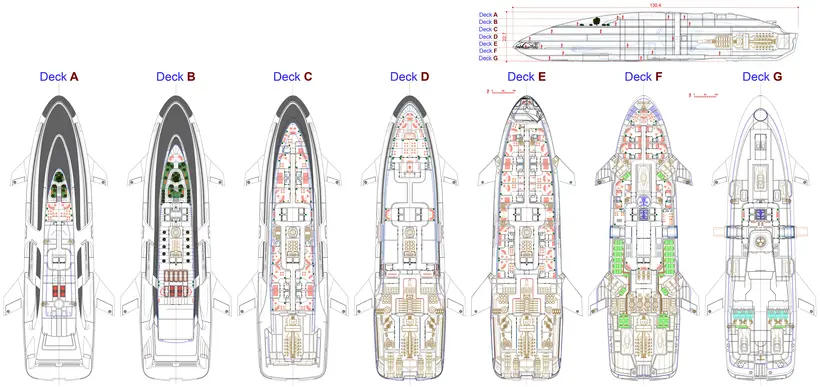
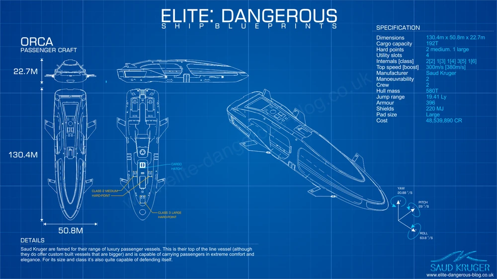

Le ORCA est un vaisseau de luxe de la série Saud Kruger, reconnu pour son design élégant et ses excellentes performances en matière de transport de passagers. Conçu pour offrir un confort optimal à ses occupants, l'ORCA combine une allure gracieuse avec une puissance moteur impressionnante, les voyageur pourrons profiter completement de l'immensité de l'espace et les passagers VIP seront amené dans des espace ce démarquant du reste du vaisseau. Avec sa capacité à accueillir un grand nombre de passagers et ses équipements de pointe, il se distingue grandement dans son style et les fonctionnement présent et mis à disposition pour chaque passagers. Son aménagement intérieur luxueux propose des installations de première classe, incluant des cabines spacieuses, des salons de détente et des équipements de divertissement de pointe, assurant ainsi un voyage confortable et agréable pour tous les passagers, l'ORCA se démarque comme un symbole de prestige et de sophistication dans l'univers complexe.

Le plan du vaisseau ORCA comprend plusieurs sections distinctes, notamment des cabines de passagers luxueuses disposées sur plusieurs ponts pour offrir un confort optimal. En plus des cabines, il comporte des espaces communs tels que des salons de détente, des bars et des zones de divertissement équipées d'écrans holographiques et de systèmes de divertissement sophistiqués. Le vaisseau est également doté de quartiers d'équipage, de zones techniques et de soutes de stockage pour assurer le bon fonctionnement et la sécurité lors des voyages interstellaires.
 {kind=link}